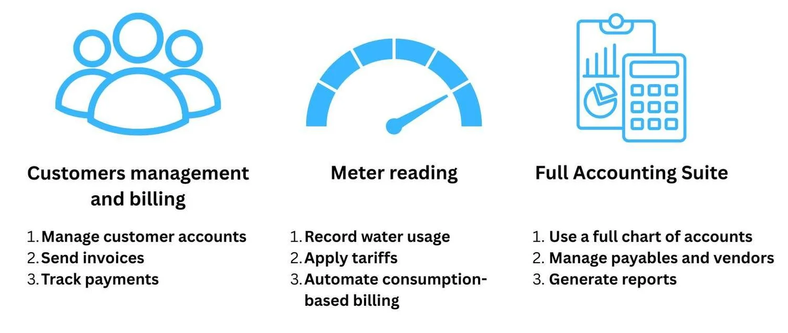
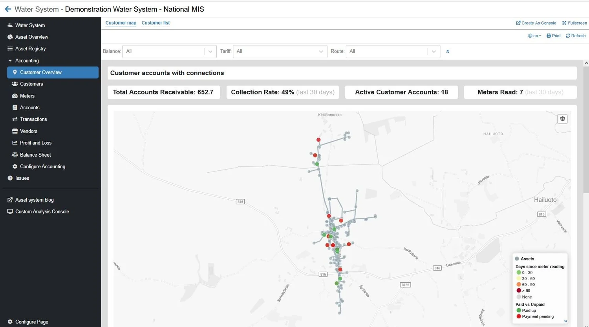
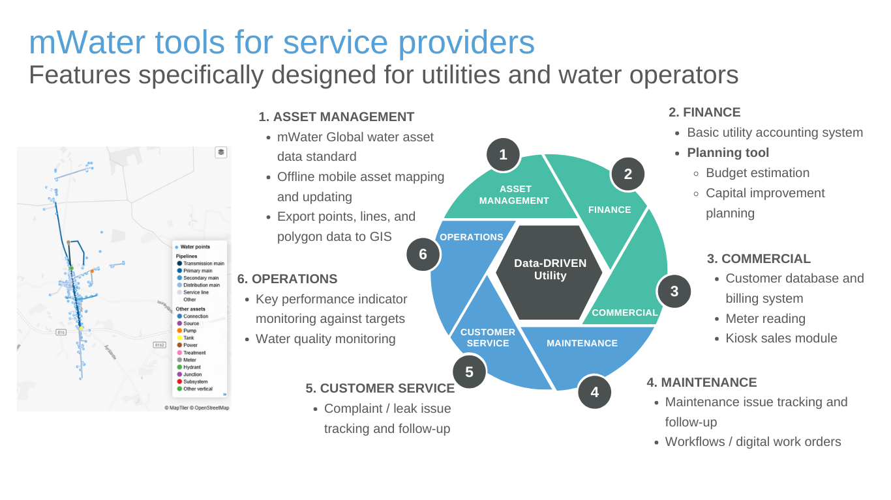
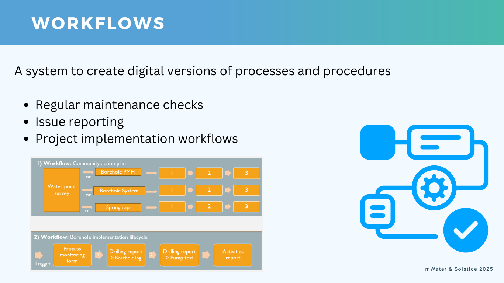
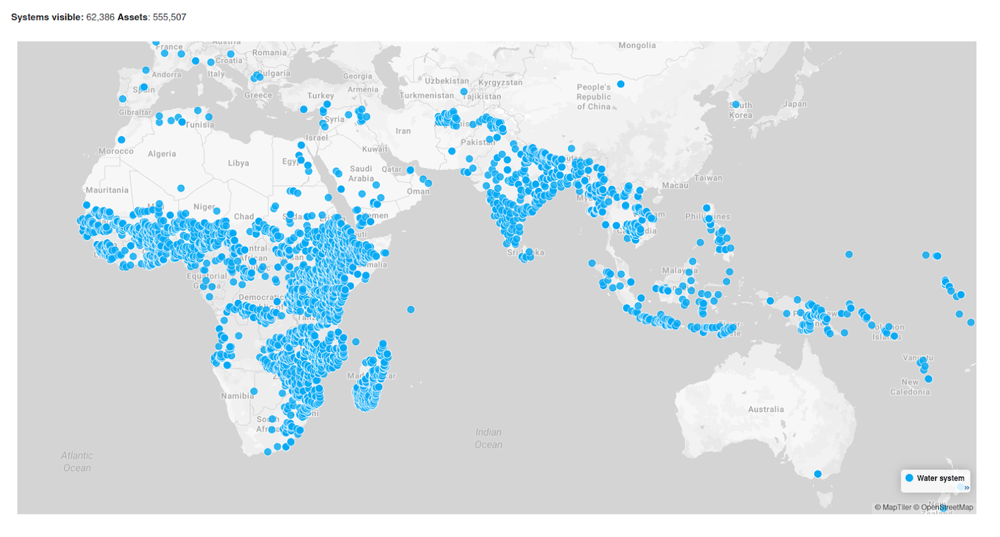

At mWater, our vision has always been clear: to professionalize the WASH sector in low-resource settings through powerful, accessible data tools and capacity building. We see a world where access to safely managed, piped water is not a distant dream but a growing reality. However, as piped water networks expand in small towns and rural areas, so does the operational complexity. Managing customers, tracking usage, billing accurately, and maintaining financial health are immense challenges, especially when the best commercial software is often prohibitively expensive.
For years, many organizations have used mWater as the world's leading free platform to map and manage their physical infrastructure. Over 80,000 water systems have now been entered into the system, and for many of them, you've mapped pipes, pumps, and connection points with our robust Asset Management features. But physical assets are only one part of the story. The true lifecycle of a utility involves the people it serves and the financial systems that sustain it.
Now we are taking a step closer to realizing our vision by officially launching our new, fully integrated Customer and Billing Management and Accounting Suite. These features are available now for all users, and as always, for free.

Just want to get started? Read our guide here.
Introducing the New Toolkit for Utility Excellence
This isn't just an update; it's a transformation of what's possible for water service providers on our platform. These new modules are designed to be modular and adaptable, allowing any utility, large or small, to use only what they need to streamline their operations.
Here's what it enables you to do:
- Customer Management and Billing: Go beyond dots on a map. Create and manage detailed customer accounts, send professional invoices, and track payments seamlessly. You can now link a household directly to the physical connection that serves them.
- Meter Reading and Tariff-Based Billing: Digitize and simplify one of the most critical parts of utility operations. Field staff can record meter readings directly in the mWater app. The system can then automatically apply pre-configured tariffs (fixed, volumetric, or tiered) to generate accurate, consumption-based bills. This eliminates manual calculation errors and saves countless hours.
- Full Accounting Suite: For the first time, utilities can manage their entire financial ecosystem within mWater. This is a complete, double-entry accounting system built for the specific needs of a water utility. It includes a full chart of accounts, the ability to manage payables and vendors, and the power to generate essential financial reports like a Profit & Loss statement and a Balance Sheet.

The Power of an Integrated System: Doing More with Less
These aren't just standalone features; their true power lies in their integration. In a sector where every dollar and every hour counts, efficiency is paramount. Our integrated approach creates a single source of truth, breaking down the silos that have traditionally existed between planning, engineering, customer service, and finance departments.
Imagine this:
A utility manager can now pull up a map and not only see their physical network (Asset Management) but also see which specific customers are in arrears (Customer Management). They can analyze payment data against water consumption trends (Meter Reading) and see the direct impact on the utility's bottom line in real-time with profit and loss reports (Accounting Suite).
This level of visibility is a game-changer. It empowers utilities to:
- Improve Financial Stability: Accurate billing and transparent payment tracking drastically improve revenue collection, which is the lifeblood of any utility. Better cash flow means more funds for operations, repairs, and expansion.
- Increase Operational Efficiency: Automating invoicing and a digital-first workflow for meter readings frees up staff to focus on proactive maintenance and customer service instead of paperwork. Collecting tariffs more effectively leaves more room to improve services in the long term.
- Make Data-Driven Decisions: Should you invest in expanding a network in a specific zone? Your long-term scenarios (Water Supply Planning Tool) can be validated against the payment histories and consumption data of nearby customers. Is a particular part of the network costing more to maintain? Your accounting data, linked to assets, can reveal the answer.

What's Next? Closing the Loop with Maintenance Workflows
The lifecycle of a utility doesn't end with billing. It continues with the ongoing work of keeping the system running. We are committed to building a truly comprehensive suite of tools, and the next piece of the puzzle is already on its way.
We are excited to share that development for our Workflows module is funded and will begin this year. Soon, you will be able to complete the entire operational loop within mWater with digital work orders:
- A leak is reported on a pipe that is already mapped (Asset Management).
- The system identifies the affected customers (Customer Management).
- A maintenance ticket is automatically generated through a Workflow, and assigned to a technician.
- When a technician resolves the issue, closes the work order in the app, the cost of the repair can be logged as a transaction (Accounting Suite).

This is the future of utility management: a seamless, digital workflow from strategic planning to physical assets, from customer payments to maintenance work orders, all on one free, unified platform. We believe that providing these professional-grade tools for free will empower water utilities across the globe to become more efficient, financially independent, and resilient. This is how we professionalize the sector. This is how we ensure that as the world gains access to piped water, the institutions managing it have the support they need to succeed.

Ready to get started?
- Explore the new features: Dive into the Customer Management and Accounting modules in the mWater Portal today.
- Learn how to manage operations: Read our comprehensive Customer and Billing Management Guide for a step-by-step walkthrough.
- Plan for the future: See what's possible with our Water Supply Planning Tool Guide.
- Join the movement: Share this news with utilities and partners in your network. The more service providers we can empower, the stronger the entire WASH sector becomes.
Further reading: